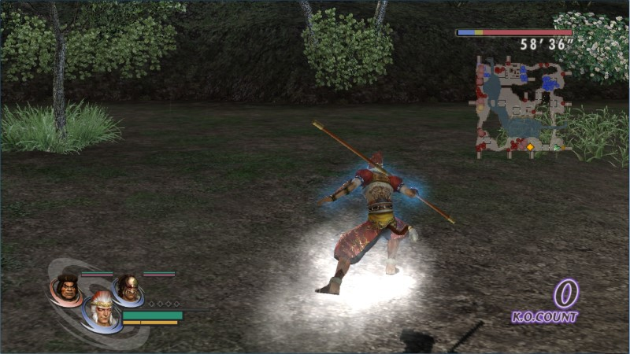
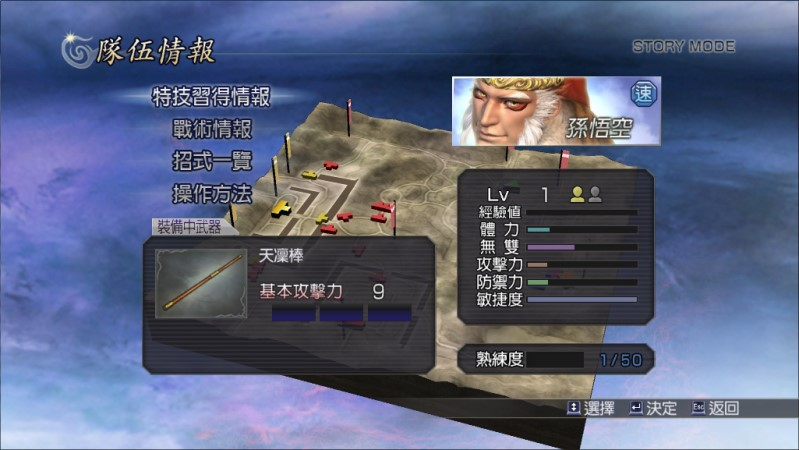

角色篇：魔王再臨
把「本傳」的「故事模式」所有角色解開以後，接下來繼續解開「魔王再臨」新增的角色吧！
在「本傳」解開過的角色，只能繼續在自由模式使用，無法在「魔王再臨」的劇情使用，想在「魔王再臨」的劇情使用更多角色，必須繼續完成每一章的關卡。
「本傳」未登場的新角色，包括：太公望、孫悟空、伏羲、女媧、源義經、平清盛、卑彌呼、真．遠呂智、百百目鬼、牛鬼、前田利家、長宗我部元親、加西亞（ガラシャ）、佐佐木小次郎、柴田勝家。其中以「孫悟空」最值得一提，因為他移動竟然是駕著筋斗雲在跑，速度還比騎馬快，是夢幻級、沒玩過別說你玩過無雙的角色。

【孫悟空駕筋斗雲可是很拉風的……咦？左下角的組合是八戒跟悟淨嗎？】

【等級 1 敏捷度就破表的夢幻角色！】
是否迫不及待要解開「魔王再臨」的新角色？很幸運的，「魔王再臨」都是只要直接過關即可獲得，不像「本傳」要照特定步驟打，簡單多了，趕快放手通關解角色吧！
蜀傳再臨
劉備 蜀 初期便已獲得。
關羽 蜀 初期便已獲得。
張飛 蜀 初期便已獲得。
星彩 蜀 初期便已獲得。
孫尚香 蜀 初期便已獲得。
服部半藏 蜀 初期便已獲得。
今川義元 蜀 初期便已獲得。
本多忠勝 蜀 初期便已獲得。
稻姬 蜀 初期便已獲得。
德川家康 蜀 初期便已獲得。
左慈 蜀９章 直接過關即可獲得。
太公望 蜀９章 直接過關即可獲得。
趙雲 蜀１０章 直接過關即可獲得。
魏延 蜀１０章 直接過關即可獲得。
陸遜 蜀１１章 直接過關即可獲得。
明智光秀 蜀１２章 直接過關即可獲得。
加西亞（ガラシャ） 蜀１２章 直接過關即可獲得。
張遼 蜀１３章 直接過關即可獲得。
諸葛亮 蜀１４章 直接過關即可獲得。
月英 蜀１４章 直接過關即可獲得。
卑彌呼 蜀終章 直接過關即可獲得。
魏傳再臨
曹操 魏 初期便已獲得。
典韋 魏 初期便已獲得。
張郃 魏 初期便已獲得。
女忍（くのいち） 魏 初期便已獲得。
女媧 魏 初期便已獲得。
夏侯惇 魏１０章 直接過關即可獲得。
夏侯淵 魏１０章 直接過關即可獲得。
太史慈 魏１１章 直接過關即可獲得。
袁紹 魏１１章 直接過關即可獲得。
姜維 魏１１章 直接過關即可獲得。
前田利家 魏１２章 直接過關即可獲得。
雜賀孫市 魏１２章 直接過關即可獲得。
甄宓（甄姬） 魏１３章 直接過關即可獲得。
龐統 魏１３章 直接過關即可獲得。
曹丕 魏１３章 直接過關即可獲得。
曹仁 魏１３章 直接過關即可獲得。
阿市（お市） 魏１４章 直接過關即可獲得。
淺井長政 魏１４章 直接過關即可獲得。
織田信長 魏１５章 直接過關即可獲得。
石田三成 魏１５章 直接過關即可獲得。
柴田勝家 魏１５章 直接過關即可獲得。
孫悟空 魏終章 直接過關即可獲得。
吳傳再臨
孫堅 吳 初期便已獲得。
孫權 吳 初期便已獲得。
黃蓋 吳 初期便已獲得。
周泰 吳 初期便已獲得。
淩統 吳 初期便已獲得。
阿國 吳 初期便已獲得。
森蘭丸 吳 初期便已獲得。
立花誾千代 吳 初期便已獲得。
長宗我部元親 吳 初期便已獲得。
源義經 吳９章 直接過關即可獲得。
周瑜 吳１０章 直接過關即可獲得。
小喬 吳１０章 直接過關即可獲得。
石川五右衛門 吳１０章 直接過關即可獲得。
孟獲 吳１１章 直接過關即可獲得。
祝融 吳１１章 直接過關即可獲得。
孫策 吳１２章 直接過關即可獲得。
大喬 吳１２章 直接過關即可獲得。
許褚 吳１３章 直接過關即可獲得。
龐德 吳１３章 直接過關即可獲得。
馬超 吳１４章 直接過關即可獲得。
貂嬋 吳終章 直接過關即可獲得。
呂布 吳終章 直接過關即可獲得。
戰國傳再臨
黃忠 戰 初期便已獲得。
關平 戰 初期便已獲得。
徐晃 戰 初期便已獲得。
島左近 戰 初期便已獲得。
島津義弘 戰 初期便已獲得。
宮本武藏 戰 初期便已獲得。
張角 戰９章 直接過關即可獲得。
真田幸村 戰１０章 直接過關即可獲得。
武田信玄 戰１０章 直接過關即可獲得。
佐佐木小次郎 戰１０章 直接過關即可獲得。
上杉謙信 戰１１章 直接過關即可獲得。
直江兼續 戰１１章 直接過關即可獲得。
伏犧 戰１１章 直接過關即可獲得。
司馬懿 戰１２章 直接過關即可獲得。
呂蒙 戰１３章 直接過關即可獲得。
甘寧 戰１３章 直接過關即可獲得。
織田信長 戰１４章 直接過關即可獲得。
濃姬 戰１４章 直接過關即可獲得。
豐臣秀吉 戰１４章 直接過關即可獲得。
寧寧（ねね） 戰１４章 直接過關即可獲得。
平清盛 戰終章 直接過關即可獲得。
遠呂智傳
董卓 遠 初期便已獲得。
妲己 遠 初期便已獲得。
遠呂智 遠 初期便已獲得。
前田慶次 遠１章 直接過關即可獲得。
風魔小太郎 遠１章 直接過關即可獲得。
諸葛亮 遠２章 直接過關即可獲得。
孫尚香 遠４章 直接過關即可獲得。
孫權 遠４章 直接過關即可獲得。
孫策 遠４章 直接過關即可獲得。
大喬 遠４章 直接過關即可獲得。
周泰 遠４章 直接過關即可獲得。
伊達政宗 遠５章 直接過關即可獲得。
服部半藏 遠５章 直接過關即可獲得。
稻姫 遠５章 直接過關即可獲得。
德川家康 遠５章 直接過關即可獲得。
特殊條件
百百目鬼 貴重品素材入手 5 個即可獲得。
牛鬼 貴重品素材入手 25 個即可獲得。
真．遠呂智 「故事模式」全關卡解開及「劇情模式」前 39 個劇本過關即可獲得。